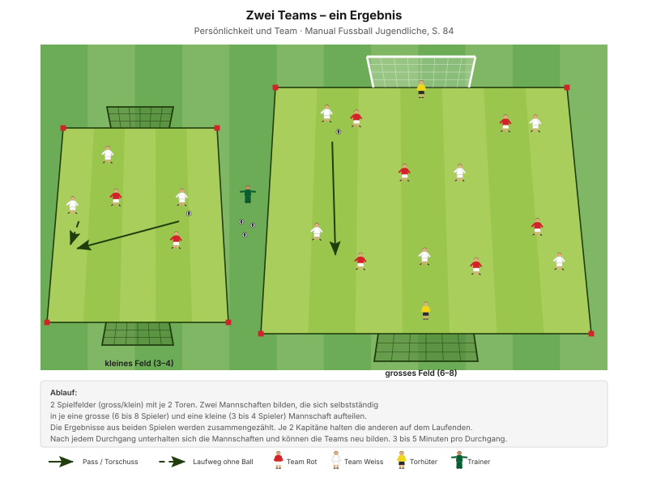
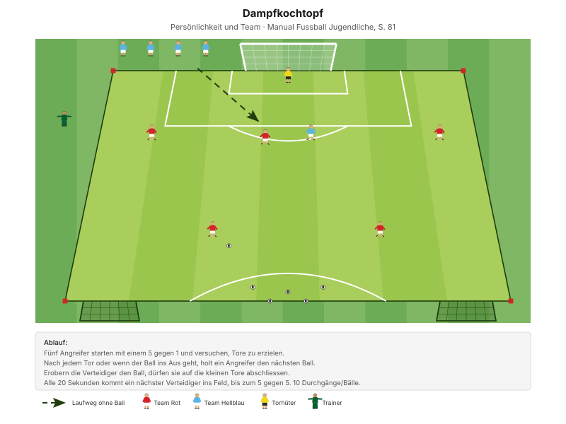

Das Team stellt seine eigenen Regeln auf – und probiert im selben Training aus, ob sie halten. Nicht die Regeln des Trainers, sondern die des Teams.
"Die Spieler lenken die Spielfreude und Leidenschaft sowie Druck und Frustration in die richtigen Bahnen." Erkennungsmerkmal mentale Stärke, Manual Fussball Jugendliche, S. 80
Ergebnis dieses Trainings am 03.07.2026: Die D7b hat sich auf drei Regeln geeinigt – Respekt, Gut Mitmachen, Konzentration. Sie gelten seither im Training und am Spiel und werden in allen weiteren Trainings referenziert.
| Zeit | Min | Teil | Inhalt |
|---|---|---|---|
| 0–10 | 10 | Besammlung | Teamregeln gemeinsam erarbeiten |
| 10–20 | 10 | E1 | Ballzirkulation im Team · Big 4 zwischen den Wiederholungen |
| 20–26 | 6 | E2 | 2 Teams gegen 1 Team |
| 26–32 | 6 | E3 | Stafette mit Slalom und Pass (Explosivität) |
| 32–47 | 15 | H1 | "Zwei Teams – ein Ergebnis" |
| 47–50 | 3 | Pause | Trinken, Umbau |
| 50–70 | 20 | H2 | "Dampfkochtopf" · Umgang mit Druck |
| 70–82 | 12 | Abschluss | Freies Spiel ohne Schiedsrichter |
| 82–90 | 8 | Ausklang | Regeln bestätigen, Verabschiedung |
| Total | 90 |
Einstieg 22 · Hauptteil 35 · Abschluss 20 Min. – nach dem Trainingsschema des Manuals (S. 43). Die Besammlung ist heute bewusst länger, dafür der Einstieg etwas kürzer.
10 Minuten · alle im Kreis
"Letzte Woche habe ich euch beim Spielen zugeschaut. Heute reden wir darüber, was uns als Team wichtig ist. Nicht meine Regeln – unsere. Meine Frage: Was braucht es, damit wir als Team gut funktionieren?"
"Das sind unsere drei Regeln. Sie gelten ab jetzt – im Training und am Spiel. Wenn jemand dagegen verstösst, erinnern wir ihn. Nicht der Trainer – das Team."
Drei ist die Obergrenze. Mehr merkt sich niemand, und Regeln, die niemand erinnert, sind keine.
Nur einmal umbauen: Das Einstiegsfeld liegt im späteren Spielfeld. Für H1 werden zwei unterschiedlich grosse Felder markiert, die in der Pause zum grossen Feld verschmelzen.
Eigene Skizze · Platzaufteilung
Nur einmal aufbauen – das Einstiegsfeld liegt im späteren Spielfeld.
10 Minuten · 30 × 25 m · 3 Teams à 4 · alle 12 Spieler
Eigene Skizze · Ballzirkulation im Team
3 Wiederholungen à 1'30''–2' – zwischen den Wiederholungen je zwei Präventionsübungen.
"Mit dem 1. Ballkontakt die Folgeaktion (Pass) vorbereiten – flache, scharfe Pässe" SFV-Lernbaustein "Einstieg TE: Pass 02", Phase 1
Bezug zum Thema: Drei Bälle im selben Raum funktionieren nur mit Rücksicht. Das ist die Teamregel Respekt, bevor sie ausgesprochen ist.
Je zwei Übungen zwischen den Wiederholungen, 25 Sekunden pro Übung:
| Bereich | Übung | Worauf achten |
|---|---|---|
| Fussgelenk | Einbeinsprünge mit Drehung | Das Knie befindet sich über der Fussspitze und zeigt in dieselbe Richtung. |
| Knie | Copenhagen | Schulter, Hüfte, Knie und Fussgelenk in einer Linie halten, das untere Bein bleibt gestreckt. |
| Hüfte | Brücke | Knie hüftbreit platzieren, Oberschenkel in einer Linie mit dem Körper. |
| Hamstrings | Brücke mit Fersengang | Becken hochhalten, damit Schulter, Hüfte und Knie eine Linie bilden. |
"Arbeit mit Zeitvorgaben – nicht mit Anzahl Wiederholungen." Prinzip Körperstabilität, Manual Fussball Jugendliche, S. 75
Zwei Punkte pro Übung nennen, nicht mehr. Qualität vor Tempo.
6 Minuten · gleiches Feld · 3 Wiederholungen à 1'30''–2'
Manual-Vorlage · Diagramm 15 "2 Teams gegen 1 Team" (S. 62)

Der Lernbaustein setzt 8 Pässe für einen Punkt an, das Manual 5. Heute gelten 8.
"Mit dem 1. Ballkontakt die Folgeaktion (Pass) vorbereiten – flache, scharfe Pässe" SFV-Lernbaustein "Einstieg TE: Pass 02", Phase 2
Bezug zum Thema: Zwei Teams punkten nur gemeinsam. Wer nur für sich spielt, verliert für beide.
6 Minuten · 2–3 Bahnen · Teams im Wettkampf
| Parameter | Vorgabe |
|---|---|
| Distanz | 15–30 m |
| Wiederholungen | 3 |
| Pause zwischen Wiederholungen | 1/15 (Belastung × 15) |
| Serien | 3 |
| Pause zwischen Serien | 1'30''–2' |
"Erholungszeit: 10- bis 20-fache Dauer der Belastungszeit, abhängig von der Laufdistanz. Vollständig erholen zwischen den Wiederholungen." Prinzipien Explosivität, Manual Fussball Jugendliche, S. 72
15 Minuten · 2 Felder · alle 12 Spieler
Manual-Vorlage · Diagramm 68 "Zwei Teams – ein Ergebnis" (S. 84)

Mit 12 Spielern: pro Mannschaft eine grosse Gruppe zu 4 und eine kleine zu 2.
Spieldauer: 3 bis 5 Minuten pro Durchgang, also drei bis vier Durchgänge.
Die Mannschaft muss sich selbst organisieren – wer spielt wo, wer wird Kapitän, wie reagieren wir auf einen Rückstand im anderen Spiel. Genau dafür sind Regeln da. Und die Aufteilung ist der erste echte Test: Wird nach Stärke sortiert, oder achtet jemand darauf, dass niemand übrig bleibt?
"Wie habt ihr euch organisiert? Nach welchen Kriterien habt ihr jeweils die Teams gebildet? Wer hat entschieden? Was haben die Umstellungen bewirkt?" Entwicklungsfragen zur Teamfähigkeit, Manual Fussball Jugendliche, S. 84
20 Minuten · 45 × 30 m · 10 Bälle bereit
Manual-Vorlage · Diagramm 62 "Dampfkochtopf" (S. 81)

Manual-Feld 45 × 50 m – heute 45 × 30 m, damit es aus dem vorherigen Aufbau entsteht.
Vor Spielbeginn betonen: Es geht darum, die Zeit der Überzahl möglichst schnell zu nutzen und alle Tore erzielt zu haben, bevor die verteidigende Mannschaft komplett ist.
Die Form wird von Sekunde zu Sekunde schwieriger – und sie ist absichtlich unfair. Genau dann zeigt sich, ob die eben beschlossenen Regeln etwas wert sind. Wer jetzt motzt oder Mitspieler beschuldigt, hat die Regel noch nicht verstanden. Das ist kein Vorwurf, sondern der Lernanlass.
"Was habt ihr gefühlt? Was haben sie ausgelöst? Wie seid ihr damit umgegangen?" Entwicklungsfragen zur emotionalen Regulation, Manual Fussball Jugendliche, S. 81
12 Minuten · 5 gegen 5 plus 2 Torhüter
Normales Spiel auf zwei Tore – aber der Trainer pfeift nicht.
Nach 6 Minuten kurzes Freeze: "Wie funktioniert das ohne Schiri? Was müsst ihr besser machen?"
8 Minuten · Cool-down im Gehen, dann Kreis
Zuerst 3–4 Minuten lockeres Auslaufen, dann der Kreis.
Ausblick: "Nächstes Mal zeigt jeder, was er am besten kann – jeder hat andere Stärken, und ich will alle sehen."
Material aufräumen – laut Teamregel Respekt Teamarbeit, nicht Strafe.
| Teil | Vorlage | Seite |
|---|---|---|
| E1 – E3 | SFV-Lernbaustein "Einstieg TE: Pass 02", Phasen 1–3 | – |
| E2 | Spielform "2 Teams gegen 1 Team" (Diagramm 15) | 62 |
| H1 | Teamfähigkeit "Zwei Teams – ein Ergebnis" (Diagramm 68) | 84 |
| H2 | Emotionale Regulation "Dampfkochtopf" (Diagramm 62) | 81 |
| Mentale Stärke, Erkennungsmerkmale | Persönlichkeit und Team | 80 |
| Explosivität, Körperstabilität | Athletik und Gesundheit | 72, 75 |
| Trainingsaufbau | Trainingsschema (Abb. 19) | 43–45 |
Alle Seitenangaben beziehen sich auf das J+S Manual Fussball Jugendliche (BASPO/SFV, 2022). Spielerzahlen und Feldmasse sind auf einen Kader von 12 Spielern angepasst. Dieser Trainingsplan wurde mit Unterstützung von KI (Claude, Anthropic) erstellt. Die Fairplay-Methodik orientiert sich zusätzlich am J+S-Dokument "Lernklima" und am Kartenset Fördern.